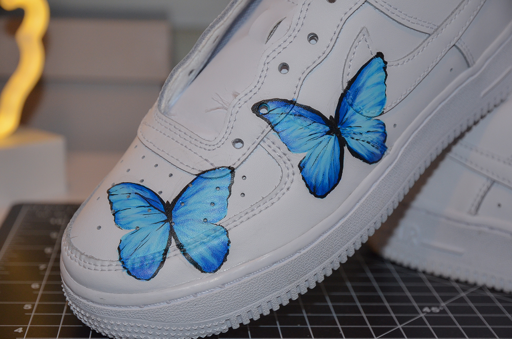

Custom Air Force 1 Sneaker
HYPERSONA WEBSITE
Challenge
To create a custom design on a white AF1 that is a statement piece but also clean and simplistic enough to be easily styled in everyday outfits. I planned on integrating the blue morpho butterfly onto the sneakers. The paint should be sustainable and doesn’t come off easily.
Solution
To make the custom designs preservable, I used acetone to remove the protective film that nike put on the surface of the leather, professional leather paint and finisher to strengthen the painting. The balance between statement and everyday wear is reached by limiting to painting only 5 total butterflies onto the sneakers. The inner part of the sneakers are kept white to prevent overdoing the customization.

